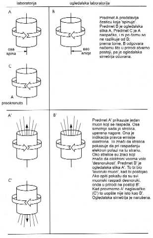

KAFE 'ŠANGAJ'
Petak, èetvrti januar, podne. Petak je bio, u ona
vremena, naš tradicionalni dan za kineski ruèak; zato je osoblje zaposleno na Fakultetu
za fiziku Univerziteta Kolumbija, a to znaèi petnaestak ljudi, došlo pred vrata
kancelarije profesora Cung Dao Lija. Neko vreme smo se tu vrzmali, a onda smo svi zajedno
pošli iz te naše zgrade, koja se zove Pupinova zgrada za fiziku, nizbrdo, Sto dvadesetom
ulicom, sve do restorana 'Šangaj' koji se nalazi na uglu Sto dvadeset pete ulice i
Brodveja. Ovako smo poèeli da ruèavamo 1953. godine, kad je taj Li došao na Kolumbiju
sa Èikaškog univerziteta, odakle je doneo prilièno svež doktorat i veæ izgraðen
ugled teorijske superzvezde.
Osobina tih naših ruèkova u podne bila je da se prièalo
na sav glas, nesuzdržano, o èemu god je ko hteo; èesto su govorila i po trojica ili
èetvorica uglas. To je bilo prekidano srkanjem 'zimske supe od lubenice' i žvakanjem
'zmajskih odrezaka', loptica od škampi, morskih krastavaca i drugih veoma zaèinjenih
egzotiènih 'njama' iz severne Kine. Godine 1957, to još nije bila opšteprihvaæena
moda. Još dok smo išli nizbrdo, jasno je bilo da æe se brbljati o parnosti, tog petka,
i o vruæim vestima od naše koleginice È. Š. Vu (C. S. Wu) koja se, iako sa istog tog
fakulteta, nalazila privremeno u Vašingtonu gde je u nacionalnom Birou za standarde
obavljala neki opit.
Pre nego što bi se bacio u ozbiljan posao takve neozbiljne
rasprave, naš T. D. Li je obavezno izvršavao svoju nedeljnu dužnost, a to je bilo - da
naruèi. Dolazio je konobar-menadžer i donosio jedno blokèe, a onda sa puno poštovanja
èekao. T. D. je morao na blokèetu da napiše šta hoæemo da jedemo. On to radi na
velièanstven naèin. To je jedna vrsta umetnosti. Prvo zaviruje u jelovnik, pa baca
pogled na blokèiæ, pa pita kelnera nešto, na mandarinskom kineskom jeziku, vrlo brzo;
namršti se, nadnese pisaljku nad blokèe, pomno iskaligrafiše nekoliko simbola. Novo
pitanje; promena u jednom simbolu, zatim pogled uperen u limene reljefe na plafonu, valjda
u potrazi za božanskim rukovoðenjem odozgo; onda naglo pisanje mnoštva tih kineskih
'karaktera' na blokèetu. Zatim stavi blok na sto i obavi završni pregled: obe šake
nadnosi nad napisanu narudžbinu, prsti jedne šake su rašireni i uzdignuti da bace papin
blagoslov na celu gomilu, u drugoj ruci je patrljak olovke. Da li je sve napisao? Tu su i
jin i jang, boja, tekstura i ukus, sve uravnoteženo kako treba? Dodaje blokèiæ i olovku
kelneru i baca se u razgovor sa nama:
"Telefonirala je Vu i kazala da njeni preliminarni
podaci nagoveštavaju neki ogroman efekat!" kaže on uzbuðeno.
Da se vratimo mi u laboratoriju (u stvarni svet, kako ga je
Boginja dala) u kojoj je ceo jedan zid prekriven ogromnim ogledalom. Naše normalno
iskustvo je sledeæe: što god uradimo pred tim ogledalom, kakav god opit izvršili -
rasipanje èestica, proizvodnju èestica, gravitacione opite nalik na one Galilejeve - svi
odrazi u njemu biæe sasvim u skladu sa svim zakonima prirode koji važe i u stvarnoj
laboratoriji. Da vidimo po èemu bismo prepoznali narušavanje parnosti kad bi se ono
pojavilo. Najjednostavniji objektivni test levoruke ili desnoruke orijentacije, test koji
bismo mogli komunikacijom da prenesemo stanovnicima planete Tvajlozozo, jeste onaj sa
zavrtnjem. Uhvatiš jedan zavrtanj i uperiš ga u drvo; glava njegova, ona na kojoj je
popreèni prorez, okrenuta je prema tebi. Sad uzmeš odvrtaè i poèneš da uvræeš 'u
smeru kretanja kazaljki na èasovniku'. Ako zavrtanj poène da ulazi u drvo, i ulazi sve
dublje i dublje, kazaæemo da je to "desnoruki" zavrtanj. Naravno, u ogledalu se
vidi tip koji okreæe suprotno od kazaljki na èasovniku, ali taj tip ima
"levoruki" zavrtanj; iz tog razloga, i njegov zavrtanj ulazi sve dublje u drvo.
E, sad, pretpostavite da živimo u svetu tako neobiènom (u nekakvoj vaseljeni iz
Zvezdanih staza) da je sasvim nemoguæe - suprotno je zakonima fizike - napraviti levoruki
zavrtanj. Time bi ogledalska simetrija bila narušena; ako vidiš sliku levorukog
zavrtnja, znaš da je lažna, da tako nešto ne može postojati; u tom sluèaju, parnost
je narušena.
Sve ovo je samo blagi uvod za objašnjenje kako su Li i
njegov kolega sa Prinstona Èen Ning Jang (Chen Ning Yang) predložili da ispitamo da li
zakoni simetrije važe kod procesa sa slabom silom. Tu je potrebna neka èestica koja je
desnoruka. (Ili levoruka.) Ona treba da se kreæe u nekom pravcu, ali pri tom i da rotira,
kao zavrtanj. Pogledajte neku èesticu koja stvarno rotira, a to znaèi, ima spin - na
primer, muon. Doèarajte sebi da je to mali valjak koji rotira oko svoje uzdužne ose.
Imamo, dakle, rotaciju. Pošto su svakom takvom valjèiæu oba kraja ista, ne možemo ni
za jedan od njih znati da li je desnoruki ili levoruki. Hoæemo da proverimo to. Postavimo
jedan takav valjèiæ izmeðu tebe i tvoje glavne protivnice. Ti se kuneš da valjèiæ
rotira u smeru kazaljke na satu. Ona se kune da je obratno. Nema naèina da se dokaže ko
je u pravu. To je situacija u kojoj se parnost održava.
Genijalnost Lija i Janga sastojala se u tome da u igru uvuku
i slabu silu (jer su baš nju i želeli da ispituju) na taj naèin što æe posmatrati
raspadanje ove èestice sa odreðenim spinom. Jedna od stvari koje nastanu kad se muon
raspadne jeste elektron. Hajde da pretpostavimo da je priroda odredila da elektron može
izleteti samo iz jednog kraja valjka. Eto, sad imamo pravac. Najzad možemo da odredimo
koji je koji kraj valjka, da se opredelimo da jedan bude ka nama, i onda pouzdano da
ustanovimo da li je rotacija valjka desnoruka (u smeru kretanja kazaljke na satu) ili
levoruka. Odreðenje koji je koji kraj moguæe je zato što elektron uvek izleæe iz samo
jednog kraja. Možemo reæi da elektron izleæe napred iz muona kao što zavrtanj prodire
svojim šiljkom napred u drvo. Ako tako gledamo muon, dok iz njega elektron izleæe
napred, i vidimo da se muon vrti kao desnoruki zavrtanj (onaj koji treba zavrtati u smeru
kazaljke na satu) onda je muon desnoruka èestica. To bi, dakle, bio jedan proces kod
èestica koji bi narušio ogledalsku simetriju. Kad gledamo takvu èesticu u ogledalu,
šta vidimo? Levoruki muon; ali takav ne postoji u prirodi.
Glasine o tome što je Vu poèela da radi stizale su tokom
božiænjeg raspusta, ali ovaj ruèak u petak posle Nove godine bio je prvo okupljanje
svih profesora posle tog raspusta. Godine 1957. profesorica Èien Šiung Vu (Chien Shiung
Wu) bila je, kao i ja, predavaè fizike na Kolumbiji, a bila je i dobro znana
eksperimentatorka. Njena posebnost bilo je radioaktivno raspadanje jezgara. Postavljala je
vrlo stroge zahteve svojim studentima i novim doktorima, bila je izuzetno energièna,
pomno je odmeravala valjanost svojih rezultata i bila veoma cenjena zbog visokog kvaliteta
podataka koje je objavljivala. Studenti su je (iza njenih leða) nazivali generalica
Èangkajšekovica.
Kad su Li i Jang bacili rukavicu izazova, dovodeæi pod znak
pitanja važnost zakona o oèuvanju parnosti, u leto 1956. godine, Vu je takoreæi istog
trenutka stupila u akciju. Za predmet svog prouèavanja odabrala je radioaktivno jezgro
kobalta 60, koje je nestabilno. Ovo jezgro se pretvori u jedno jezgro nikla, jedan
neutrino i jedan pozitivan elektron (pozitron). Ne vidiš sve to; samo 'vidiš' kako iz
kobaltovog jezgra odjednom izleæe pozitron. Ovaj oblik radioaktivnosti poznat je kao
beta-raspad zato što se nekada govorilo za elektrone i pozitrone emitovane u takvim
procesima da su 'beta-èestice'. Zbog èega nastaje beta-raspad? Fizièari kažu: zbog
slabog nuklearnog meðudejstva. To im znaèi: zbog jedne sila koja deluje u prirodi i
stvara takve reakcije. Ne bave se sve sile samo time da nešto guraju ili vuku, privlaèe
ili odbijaju; neke izazivaju promenu vrste stvari, pretvore, vidite, kobalt u nikl, i pri
tom emituju jedan lepton. Od tridesetih godina pa do danas, veliki broj reakcija pripisan
je slaboj sili. Veliki Italoamerikanac Enriko Fermi prvi je dao slaboj sili matematièki
oblik, što mu je omoguæilo da podrobno predskaže mnoge reakcije, pa i ovu sa kobaltom
60.

U radu objavljenom 1956. godine, pod naslovom 'Pitanje
oèuvanja parnosti kod slabe sile', Li i Jang su uzeli o obzir izvestan broj reakcija, pa
su razmatrali kakve bi bile opitne implikacije ukoliko slaba sila ne poštuje parnost
(ogledalsku simetriju). Njih je zanimalo u kom pravcu æe elektron biti izbacivan iz
raznih jezgara. Ako bi elektron voleo da izleæe iz kobaltovog jezgra više na jednu
stranu nego na drugu, bilo bi to kao da ga je priroda obukla u košulju sa dugmadima.
Znali bismo šta je pravi opit, a šta je slika u ogledalu.
U èemu je razlika izmeðu izvanredne zamisli i rutinskog
nauènog rada? Analogno pitanje moglo bi se postaviti o pesništvu, slikarstvu, o nekoj
muzièkoj kompoziciji, pa èak, verovali ili ne, i o sudskoj tužbi. U umetnosti, konaèni
veliki sudija je vreme. U nauci, opit presuðuje da li je zamisao bila 'ona prava'. Ako je
izvanredna, ona æe otvoriti nove prostore za istraživanje, pri èemu æe se pojaviti
mnogo novih pitanja - ali æe veliki broj pitanja otiæi zauvek na spavanje.
Um T. D. Lija kretao se nekim finim stazicama. I kad je
naruèivao ruèak i kad je komentarisao neku staru kinesku vaznu ili sposobnosti nekog
studenta, on je izgovarao reèenice pune oštrih ivica, tako da su podseæale na brušene
dijamante. U ovom zajednièkom nauènom radu Lija i Janga (Janga nisam osobito dobro
poznavao), ova kristalna zamisao o parnosti dobila je mnoge oštre ivice. Da bi èovek
doveo u pitanje jedan èvrsto ustolièen zakon prirode, potrebno je mnogo kineske
drskosti. Mi smo u to doba veæ imali ogromno more podataka prikupljenih o tom èvrsto
ustolièenom 'zakonu', ali su Li i Jang uvideli da to more podataka nema nikakve veze sa
ovim delom prirode koji izaziva beta-raspade - sa slabom silom. Eto još jedne blistave
oštre ivice: tu je, koliko ja znam, prvi put u istoriji nauke dopuštena moguænost da za
razlièite sile u prirodi važe razlièiti zakoni oèuvanja.
Li i Jang su zasukali rukave, dodali veliku kolièinu
'pregnuæa pored nadahnuæa' i pregledali, jednu po jednu, mnoge reakcije radioaktivnog
raspada koje su predstavljale dobre kandidate za proveru ogledalske simetrije. U njihovom
radu bile su mukotrpno, do tanèina, date analize moguæih reakcija, da bi glupi
eksperimentatori znali taèno šta treba da rade. Koleginica Vu smislila je konkretnu
verziju jednog od tih predloženih opita, onog sa kobaltovim jezgrom. Kljuè njenog
pristupa sastojao se u tome da prvo obezbedimo da sva, ili bar mnoga, kobaltna jezgra
imaju spin istog smera. Tvrdila je da se to može postiæi tako što bi naš izvor kobalta
60 radio pri vrlo niskim temperaturama. Njen opit je bio dozlaboga zapetljan, zahtevao je
upotrebu kriogene opreme koju nije bilo lako pronaæi. Zato je i otišla u Biro za
standarde, gde su tehnike za postrojavanje spina èestica bile, veæ odavno, dobro
razvijene.
Pretposlednje jelo tog petka bio je jedan veliki, dinstani
šaran sa sosom od crnog pasulja, prazilukom i ljutim crnim lukom. Dok je to servirao, Li
nam je ponovio kljuènu informaciju: taj efekat koji Vu posmatra veoma je veliki, više od
deset puta veæi nego što je oèekivala. Podaci su bili tek glasine, preprièavanja, još
ništa sigurno; razumete, èisto preliminarni, ali (T. D. je meni servirao riblju
glavudžu jer je znao da volim obraze) ako je efekat toliko veliki, onda je to taèno ono
što bismo mogli da oèekujemo ako je neutrino dvokomponentan... Njegovo dalje uzbuðeno
èavrljanje prestao sam da slušam, jer je jedna ideja poèela nièe u mojoj glavi.
Posle ovog ruèka otidosmo uzbrdo, na jedan seminar. Posle
su bila neka sastanèenja, pa jedno pijenje èaja iz društvenih razloga i jedan
kolokvijum. Kroz sve te aktivnosti prolazio sam rasejan, stalno vrteæi u glavi to da Vu
nalazi efekat koji je 'veliki'. Pamtio sam, iz Lijevog predavanja održanog u Brukhejvenu,
u avgustu, da bi oèekivani efekti, izazvani narušavanjem parnosti pri raspadanju muona i
piona (pi-mezona), morali biti majušni.
Veliki? U avgustu sam bacio pogled na takozvani 'pi-mu'
(pion-muon) lanac raspadnih reakcija i shvatio da tu ne možeš organizovati dobar opit
bez dve uzastopne reakcije. Posle smo malo i raèunali, tog avgusta 1956, i zakljuèili da
bi opit imao marginalne ili nikakve izglede da uspe. Ali ako je efekat veliki...
Oko 6 sati po podne bio sam u kolima i vozio se kuæi na
veèeru, u Dobs Feri. Trebalo je da posle toga provedem tihu veèernju smenu sa mojim
postdiplomcem u obližnjoj laboratoriji Nevis u, znate veæ, Irvingtonu na Hadsonu. Naš
akcelerator Nevis, sa svojih 400 MeV, bio je radni konj koji je vukao i vukao proizvodnju
i prouèavanje mezona - pedesetih godina još srazmerno nove èestice. U tim sreænim
danima nije bilo mnogo mezona, pa je mašina Nevis stizala da se brine i o pionima i o
muonima.
U Nevisu smo bombardovali metu protonima i dobijali snažne
zrake piona. Pioni su nestabilni i zato, dok su izletali iz mete i iz akceleratora, jurili
kroz zaštitni zid i uletali u dvoranu za opite, dvadesetak postotaka njih se raspadalo,
slabim raspadom, na muon i neutrino.
p ® m + n (u letu)
Muoni su, najèešæe, nastavljali da lete u istom pravcu
kao i njihov roditelj pion. Ako bi se tu kršio zakon parnosti, nastajao bi višak muona
èije su ose spina u smeru kretanja èestica, a manjak muona èije bi ose spina bile
okrenute, recimo, na suprotnu stranu. Ako bi efekat bio veliki, priroda bi mogla da nam
obezbedi uzorak èestica istosmernog spina. Tu situaciju je Vu htela da stvori hladeæi
kobalt 60 do krajnje niskih temperatura u magnetnom polju. Presudno je bilo da posmatra
one muone èiji pravac ose spina zna i da vidi kako æe se oni raspadati na elektrone i
neutrine. |